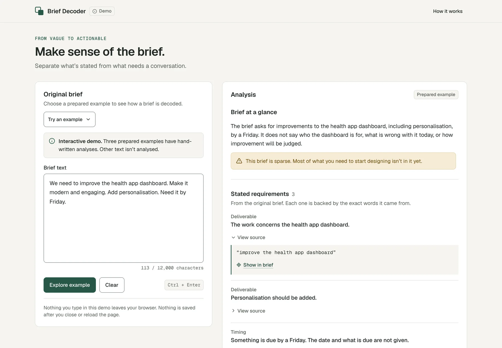
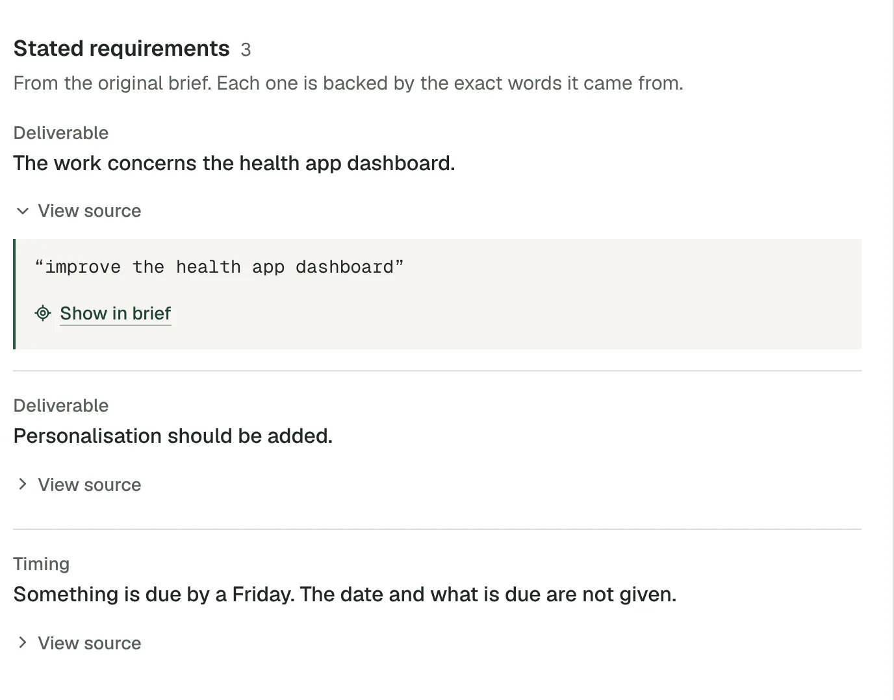
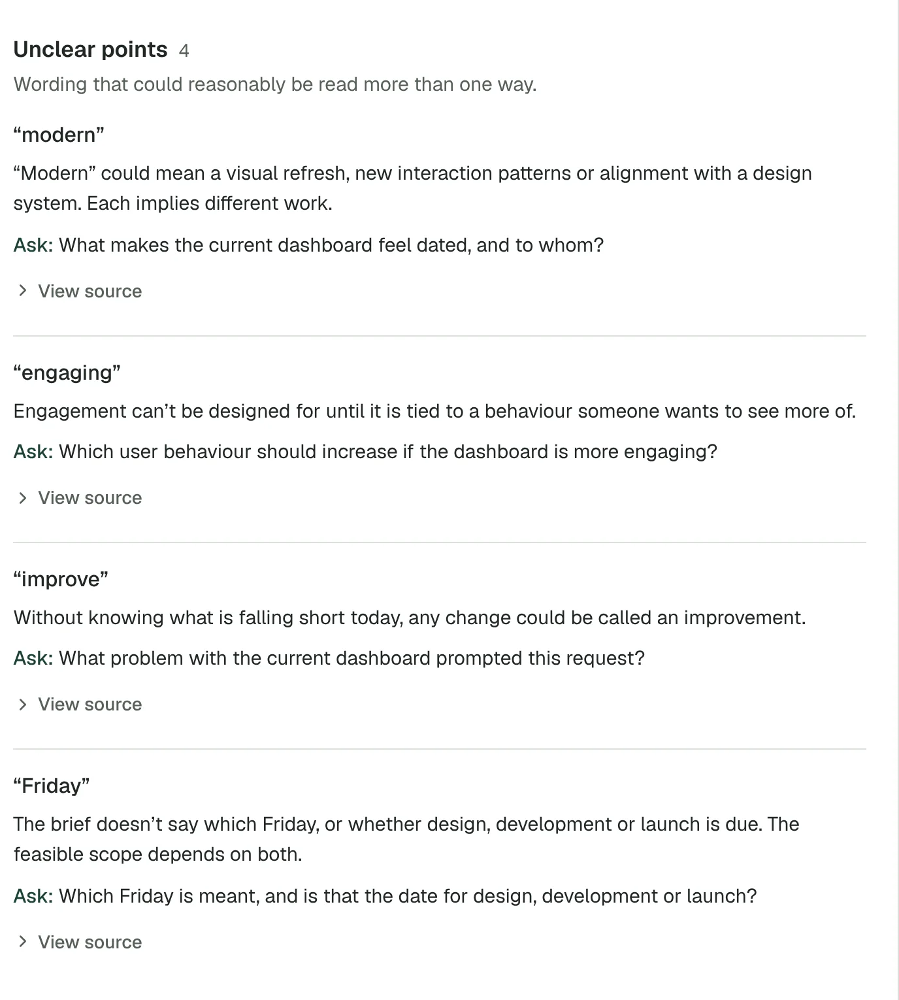
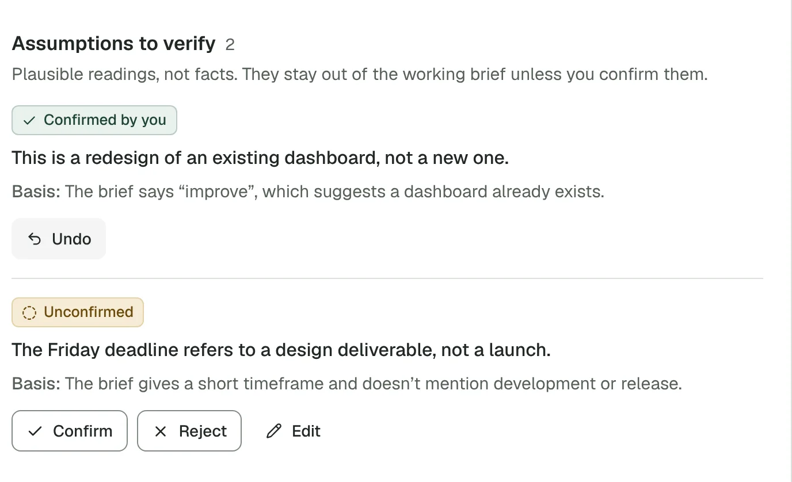
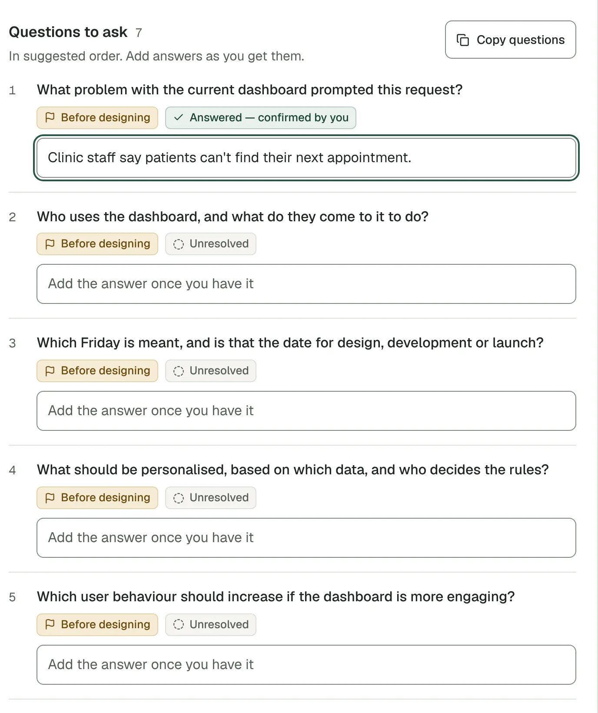
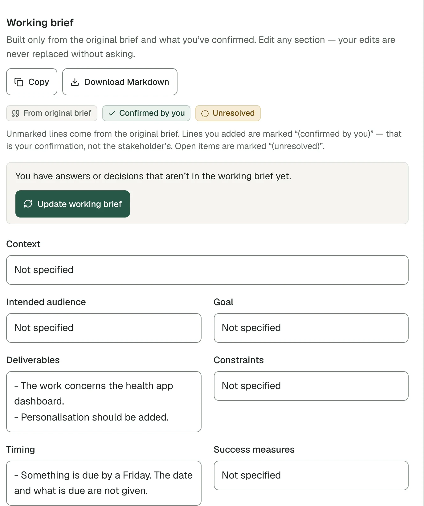
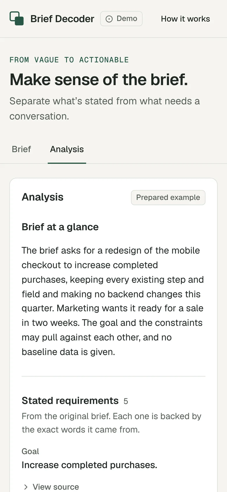
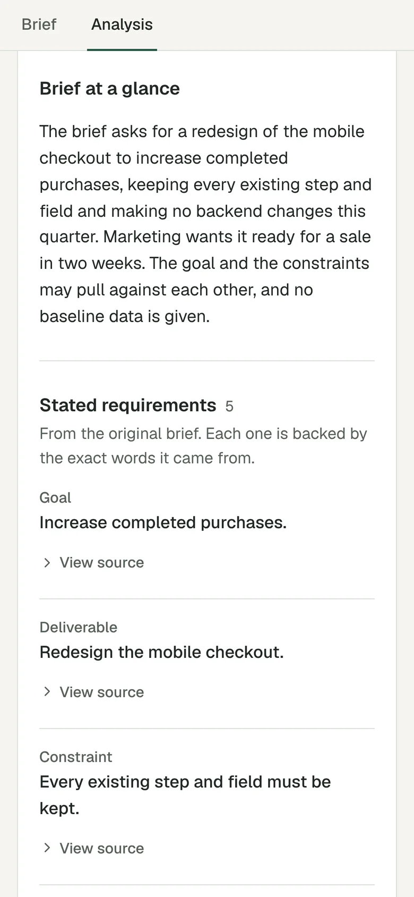
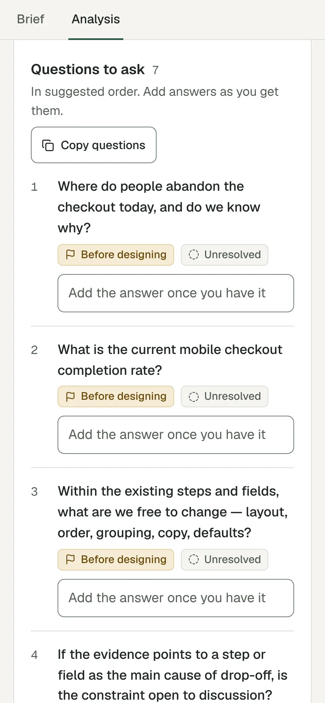

An AI tool that separates what a design brief says from what still needs a conversation.

Design work usually starts from a Slack message. Requirements, wishes and contradictions sit in the same paragraph, and the gaps surface after the screens are designed.
“We need to improve the health app dashboard. Make it modern and engaging. Add personalisation. Need it by Friday.”
A generic AI summary fills every gap smoothly, so a vague brief comes back looking finished. Brief Decoder reads it through six lenses instead, and never invents what isn't there.
What it says, in exact words
Wording with two readings
Absent details that matter
Guesses to confirm
Requests that clash
One ranked list to ask
Open any finding to see the brief's exact words, then jump to them in the original. Designers check the AI instead of trusting it.

"Modern", "engaging" and "Friday" each get a reason they matter and one targeted question to resolve them.

Plausible readings stay out of the working brief until the designer confirms, rejects or edits them.


One ranked question list. Marked "before designing" or "later", with space to log answers.

A working brief to take away. Answers and confirmations become an editable brief to copy or download.



Brief and Analysis become tabs on small screens, so a brief from Slack can be decoded on a phone.
For this task, a confident mistake is worse than no answer. Trust was designed in, not added on.
Claims without a matching quote are shown apart from facts.
No made-up audiences, metrics or dates. Empty beats padded.
Instructions hidden in a pasted brief are ignored.
No database or tracking. Work clears on reload.
What an AI doesn't know matters as much as what it says.
A source quote did more than any claim of accuracy.
Loading, limits and refusals need as much design as results.
Paste any brief, or try one of three examples.